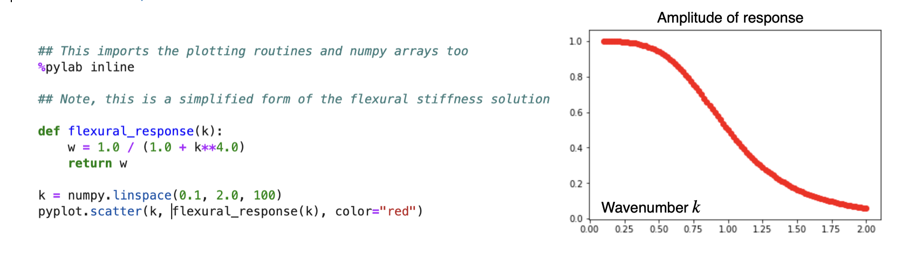
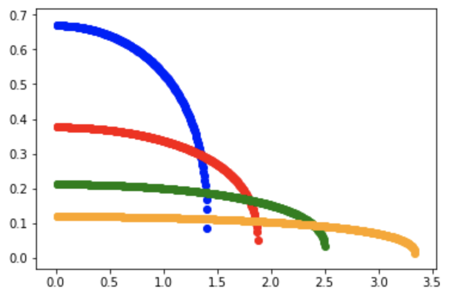

Exercise: Simple Equations and Some Calculations
This assessment task is intended to familiarise you with some of the equations that we have seen or will soon see in the lecture notes and typical solutions that are in common use. You are not required to derive the solutions as this is a verification task. When you are asked to show how an equation behaves you can either:
- Plot the results using python / R / Basic / …
OR
- Use a traditional curve-sketching approach to indicate maxima / minima / asymptotic behaviours and how those change with the parameters of the model.
The general differential equation for the deflection of an elastic lithosphere with an end load \(P\) and a horizontal load $q(x), is given by
\[D\frac{d^4w}{dx^4} + P \frac{d^2w}{dx^2} + \Delta \rho g w(x) = q(x)\]
If \(P=0\) and \(q(x)=\rho_c g h_0 \sin(kx)\), show that w=w_0 (kx) is a suitable solution and sketch the value of \(w_0\) as a function of \(k\) .
The solution is easy to validate by substitution of the form of \(q(x)\) and \(w(x)\) into the given equation. And re-arranging to determine that:
\[ w_0=\frac{\rho_c g h_0}{\Delta\rho g + Dk^4} \]
We can make a plot:

Biharmonic equation
The biharmonic equation describes two dimensional, incompressible Stokes flow. It is a fourth order PDE written as:
\[\nabla^4 \psi = -Ra \frac{\partial T}{\partial x}\]
For the purposes of this question, we will work in Cartesian coordinates and we will identify solutions to the homogeneous equation, i.e.
\[ \frac{\partial^4 \psi}{\partial x^4} + 2\frac{\partial^4 \psi}{\partial x^2 \partial y^2} + \frac{\partial^4 \psi}{\partial y^4} = 0 \]
Show that \(\psi_0 = \left( A \cosh ky + B \sinh ky \right) \sin kx\) is a solution.
As pointed out in Turcotte and Schubert, 2002, we need four independent solutions / coefficients to form a complete set for this equation. The other term they suggest trying is \(\psi_1 = y\psi_0\) .
Validate that \(\psi_1\) is an eigenfunction of the biharmonic operator.
How about \(\psi_0 + \psi_1\) ? (That is to say, can you comment on whether/why this is a linear equation)
Note: there are many different forms of the equations given in T&S’s book and this really relates to choosing which functions are the best fit to the boundary conditions for the problem and which, as a result, give the simplest expressions.
Gravity Currents / Lava domes
Pancake lava domes on Venus can be modelled as though they are blobs of viscous lava that spread out after an initial eruption. In a 1982 paper, Huppert found a mathematical expression for the spreading of viscous fluids on a flat surface. The solution assumes either fixed volume or a known injection rate. For a fixed volume, the solution is interesting because it keeps the same shape but just scales horizontally / vertically.

The solution looks like this:
\[ h(r,t) = \nu_N^{2/3} t^{-1/4} \phi(\nu/\nu_N) \]
where \(\nu = r t^{-1 / 8}\) and \(\phi({\nu}/{\nu_N}) = \left( \frac{3}{16}\right)^{\frac{1}{3}} \left( 1-\left({\nu}/{\nu_N}\right)^2 \right)^{\frac{1}{3}}\).
\(\nu_N\) is a constant with a value close to 1. The solution is made up of two parts: a scaling that stretches the shape in the radial direction and shrinks it in the vertical direction as time progresses, and the other part is the shape itself (the function \(\phi\)).
Make a sketch or plot of \(h(x)\) at four different values of \(t\): 1.0, 10.0, 100.0, 1000.0
This looks a bit complicated but first write a function to compute \(\nu(r,t)\) and then a function to compute \(\phi(\nu)\).
\(\phi(\nu)\) is only valid if $ 0 < < 1$ so be sure to check and return 0.0 if \(\nu\) is outside that range (it will be since you want to plot a region into which the blob begins to spread).

Calculate values up to r=4.0. You should see the dome spreading out with time as long as you make sure that the values outside the valid range are properly zeroed out.
Oceanic Heat Flux
The surface heat flux in the oceanic lithosphere follows the square root of its age. The explanation for this is that we can use a 1d diffusion equation and assume that heat has been conducted vertically out of the lithosphere from the moment of formation until now. The solution to this problem can be looked up in many standard textbooks (e.g. Turcotte & Schubert, 2002) and I want you to assume the solution, not derive it. The solution gives us the temperature, \(T(z,t)\) for a given age (\(t\)) and depth (\(z\)) and now we need to know the heat flux (or temperature gradient).
Assume that the temperature is given by a simple error-function, \(T(z,t) = \mathrm{erf}(z/\sqrt{\kappa t})\).
Show how to obtain \(\left. \partial T / \partial z \right|_{z=0}\) from this expression.
Here are a couple of useful reminders that might be helpfulc:
\[\mathrm{erf}(x) = \frac{2}{\sqrt{\pi}}\int_0^x e^{-\alpha^2}d\alpha\]
\[\frac{d}{dx}\int_0^x f(\alpha) d\alpha = f(x)\]
\[\frac{dF(\alpha)}{dx}=\frac{dF}{d\alpha}\frac{d\alpha}{dx}\]
Lithospheric Flexure
The general differential equation for the vertical deflection (w) of a flat-lying, 2D, elastic plate with an end load \(P\) and a horizontal load \(q(x)\), is given by
\[D\frac{d^4w}{dx^4} + P \frac{d^2w}{dx^2} + \Delta \rho g w(x) = q(x)\]
If \(P=0\) and \(q(x)=0\), show that \(w = w_0 e^{-x/\alpha} \left[ \cos(x/\alpha) + \sin(x/\alpha) \right]\) is a potential solution. This will give a relationship between \(D\) and \(\alpha\).
You can now plot the shape of for three different values of . To make a connection between the magnitude of the load and the response, we note (see Turcotte & Schubert) that this expression has to hold:
\[\frac{V_0}{2} = D \left. \frac{d^3 w}{dx^3} \right|_{x=0}\]
Sketch the flexural profile, \(w\) for three different values of \(\alpha\) (or \(D\)).
Note: The flexural profile is the shape the lithosphere will take in response to a load. A typical example is when a sea mount chain (e.g. Hawaii) is dumped onto the oceanic lithosphere. We assume that we are looking at a cross section of the lithosphere and the extent out-of-the-page is infinite.
References
Huppert, Herbert E. “The Propagation of Two-Dimensional and Axisymmetric Viscous Gravity Currents over a Rigid Horizontal Surface.” Journal of Fluid Mechanics 121, no. 1 (August 1982): 43. https://doi.org/10.1017/S0022112082001797.
Turcotte, Donald Lawson, and Gerald Schubert. Geodynamics. 2nd ed. Cambridge ; New York: Cambridge University Press, 2002.
Afterword
OK - that’s all. If you look closely, you will see that we mostly left out the constants and material properties from these examples (especially 2 and 3) as it just makes it more complicated to write out.
If you are interested in seeing the derivations in more detail, you should take a look at the book Geodynamics by Turcotte & Schubert. The elastic flexure equations are in chapter 3, and the derivation of the boundary layer structure for the oceanic lithosphere is in chapter 4 (of the 2nd edition which is the more commonly available version).